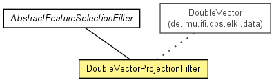

de.lmu.ifi.dbs.elki.datasource.filter
Class DoubleVectorProjectionFilter
java.lang.Object
 de.lmu.ifi.dbs.elki.datasource.filter.AbstractConversionFilter<V,V>
de.lmu.ifi.dbs.elki.datasource.filter.AbstractFeatureSelectionFilter<DoubleVector>
de.lmu.ifi.dbs.elki.datasource.filter.DoubleVectorProjectionFilter
de.lmu.ifi.dbs.elki.datasource.filter.AbstractConversionFilter<V,V>
de.lmu.ifi.dbs.elki.datasource.filter.AbstractFeatureSelectionFilter<DoubleVector>
de.lmu.ifi.dbs.elki.datasource.filter.DoubleVectorProjectionFilter
- All Implemented Interfaces:
- ObjectFilter
public class DoubleVectorProjectionFilter
- extends AbstractFeatureSelectionFilter<DoubleVector>

Parser to project the ParsingResult obtained by a suitable base parser
onto a selected subset of attributes.
| Methods inherited from class java.lang.Object |
clone, equals, finalize, getClass, hashCode, notify, notifyAll, toString, wait, wait, wait |
DoubleVectorProjectionFilter
public DoubleVectorProjectionFilter(BitSet selectedAttributes)
- Constructor.
- Parameters:
selectedAttributes -
filterSingleObject
protected DoubleVector filterSingleObject(DoubleVector obj)
- Description copied from class:
AbstractConversionFilter
- Normalize a single instance.
You can implement this as UnsupportedOperationException if you override
both public "normalize" functions!
- Specified by:
filterSingleObject in class AbstractConversionFilter<DoubleVector,DoubleVector>
- Parameters:
obj - Database object to normalize
- Returns:
- Normalized database object
getInputTypeRestriction
protected SimpleTypeInformation<? super DoubleVector> getInputTypeRestriction()
- Description copied from class:
AbstractConversionFilter
- Get the input type restriction used for negotiating the data query.
- Specified by:
getInputTypeRestriction in class AbstractConversionFilter<DoubleVector,DoubleVector>
- Returns:
- Type restriction
convertedType
protected SimpleTypeInformation<? super DoubleVector> convertedType(SimpleTypeInformation<DoubleVector> in)
- Description copied from class:
AbstractConversionFilter
- Get the output type from the input type after conversion.
- Specified by:
convertedType in class AbstractConversionFilter<DoubleVector,DoubleVector>
- Parameters:
in - input type restriction
- Returns:
- output type restriction